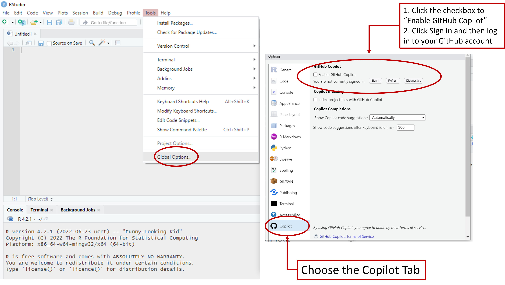
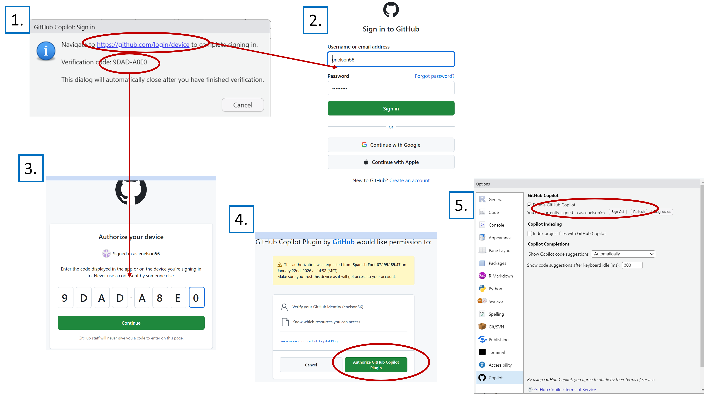
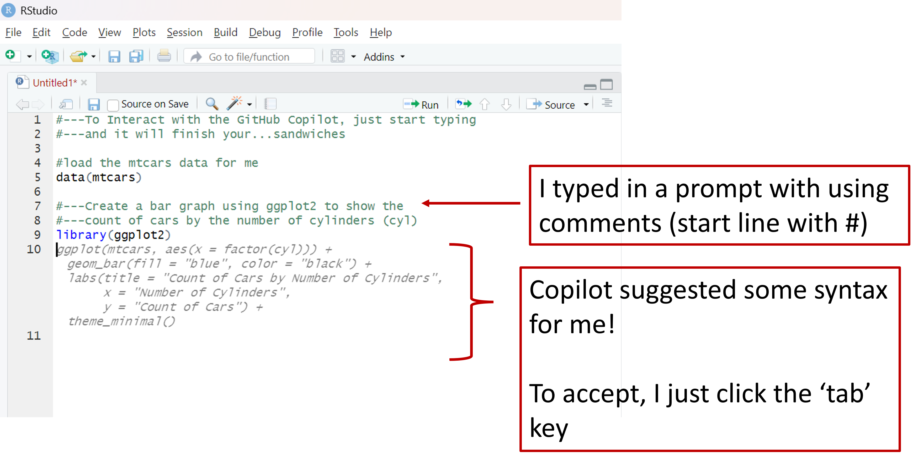

13AI Integration: Prompting, Skills, and Responsible Use
AI Literacy is Responsible Stewardship
PROMPTING · AI SKILLS · VERIFICATION
Work Smarter, Stay Curious
AI tools can help you learn, code, and communicate, but their output still needs careful review. Explore effective prompting, reusable skills, and practical habits for checking and disclosing AI-assisted work.
NoteLearning objectives
By the end of this lesson, you should be able to:
Explain the opportunities and limitations of AI tools
Use Copilot suggestions critically in RStudio
Write and refine structured prompts
Create and test a reusable AI Skill
Verify AI-assisted R code and claims
Disclose AI contributions appropriately
13.1 Introduction and Responsible Stewardship
Artificial Intelligence (AI) is not something that we should fear. We should embrace the power of AI to help us be more productive, creative, and efficient. In this document, I will demonstrate how AI can assist in generating R code, writing explanations, and providing insights. I will refer you to the BYU AI Policy and UNESCO’s AI Recommendations for further reading.
13.1.1 Keep Your Eyes Open
Before walking down this path, it is important to recall that we believe in prophetic leadership. As such, we should exercise caution in how we use AI. We are meant to be different in every aspect of our lives, and that includes how we use technology.
Elder David A. Bednar, of the Quorum of the Twelve Apostles, said this on BYU campus in January 2024:
“As you strive to learn the gospel of Jesus Christ and perform the work you have to do, I specifically exhort you to be wise in your use of contemporary technological tools. Innovations such as artificial intelligence [can] both (1) assist you in receiving magnificent blessings and (2) diminish and suffocate your moral agency. Please do not allow the supposed accuracy, speed, and ease of modern technologies to entice you to avoid or circumvent the righteous work that invites into your life the blessings you will need. My beloved brothers and sisters, there are no spiritual shortcuts or quick fixes.”
Elder Quentin L. Cook of the quorum of the Twelve Apostles, also addressed BYU campus in March 2026 discussing our stewardship with AI.
13.2 GitHub Copilot in RStudio
GitHub is a web-based platform used for version control and collaborative software development. It allows developers to host and review code, manage projects, and collaborate with others. GitHub uses Git, a distributed version control system, to track changes in code and facilitate collaboration among multiple contributors.
One of the awesome tools that has been produced is GitHub Copilot integration into RStudio. GitHub Copilot is an AI-powered code completion tool that suggests code snippets and functions as you type, helping to speed up the coding process and improve productivity. You can get more details here
Let’s get you set up to use GitHub Copilot in RStudio:
Check current GitHub student eligibility and Copilot plan terms; free access and eligibility can change.
You will need to verify your email address
Turn on the Copilot feature within RStudio. To do this, go to the Tools Menu > Global Options > GitHub Copilot. Sign in to your GitHub account and enable the Copilot feature.
Figure 1. Tools > Global Options menu in RStudio

Figure 2. The GitHub Log In Process
Here is an example GitHub Copilot login process after clicking the “Sign in to GitHub” button:

13.2.1 Copilot in Action
You can check to see if Copilot is active by looking at the lower right-hand corner of your R Script. You will see messages from Copilot such as “Waiting for completions…” or “Copilot is ready”.
Then just start coding and Copilot will start to try to help you. For example, in the figure below, I started a new R Script and then asked Copilot to help me make a bar graph. Its suggestion is seen in the gray, italicized text. To accept the suggestions, you can just hit the Tab key.
Figure 3. GitHub Copilot Suggesting R Code

TipA note about the screenshots
The Copilot screenshots show one version of RStudio and the GitHub sign-in process. Your menus and authentication screens may look different. Follow the current instructions in the Posit documentation if these screenshots are outdated (I do my best!).
13.3 Learn to prompt effectively
A prompt is the instruction or question you give an AI assistant. A strong prompt tells the assistant what you are doing, what you want, and how to help.
13.3.1 The CLEAR framework
Letter
Meaning
Ask yourself…
C
Context
What background information does the AI need?
L
Learning goal
What am I trying to accomplish or understand?
E
Expectations
What format, constraints, and level of detail do I want?
A
Audience
Who is the output for?
R
Refinement
How will I critique, test, and improve the response?
CLEAR is a classroom mnemonic for this lesson, not a required industry standard.
13.3.2 Compare two prompts
Weak prompt “Make me a graph in R.”
Stronger prompt “I am an undergraduate public health student learning ggplot2. I have a dataset with life expectancy, GDP per capita, and continent. Help me make a readable scatterplot using tidyverse syntax and theme_classic(base_size = 15). Use accessible colors, explain unfamiliar commands, and ask a question before making a major assumption. I need to present this graph to classmates.”
The second prompt gives the AI a clearer task and a way to judge success. It also asks the AI to support learning rather than just produce code.
13.3.3 Practice: improve a prompt
TipDo It Yourself Activity 1 · 10 minutes
Starting prompt: “Explain program evaluation.”
Rewrite the prompt using CLEAR for a first-year public health student.
Ask an AI assistant both versions and compare the results.
Identify two specific improvements and one remaining weakness.
Follow up: “Explain one part more simply, using an example.”
Discuss: Which details made the biggest difference? What did you still need to verify?
13.3.3.1 Useful follow-up prompts
“Explain this code one line at a time. Do not change the code yet.”
“Give me two alternative approaches and explain their tradeoffs.”
“What assumptions are you making? Which of them should I check?”
“Create a small test case so I can verify that this works.”
13.4 Train Your AI: Turn repeated prompts into a Skill
A Skill is a reusable set of instructions (and sometimes supporting files or scripts) that guides an AI assistant through a particular kind of task. Think of it as a short training manual for an assistant you expect to work with repeatedly.
For example, instead of repeating your preferences every time you make an R graph, you can create a Skill that remembers the workflow instructions for graph design. Skill creation and availability vary by platform, account, and institution. In ChatGPT, available Skills can be explored at /skills where supported; Claude also offers skill-related workflows, though setup and features differ.
13.4.1 Example: a Public Health Data Visualization Skill
Our Skill should…
Use tidyverse pipelines and ggplot2.
Default to theme_classic(base_size = 15).
Choose accessible colors and clearly label units.
Explain unfamiliar code at a beginner level.
Ask clarifying questions when analytical choices are unclear.
Never fabricate data, estimates, results, or references.
Suggest ways to check whether a graph represents the data honestly.
13.4.2 A prompt students can copy
ImportantCopy this prompt into ChatGPT or Claude
Create a reusable Skill called Public Health Data Visualization.
I am an undergraduate student learning R. I want help making accurate, readable, professional figures using tidyverse and ggplot2.
Before creating the Skill, ask me a few questions about my coding experience, preferred graph style, and typical assignments.
When helping me, explain unfamiliar commands, ask before making major analytical assumptions, suggest appropriate visualization options, and remind me to verify the results. Never invent data or statistical findings.
Help me write the Skill instructions, then show me how to test and improve them. If my account does not support installing Skills, provide a reusable instruction document I can paste into future conversations.
13.4.3 What makes a Skill useful?
A useful Skill is specific, repeatable, and testable. “Be smart and helpful” is too vague. “For any ggplot2 request, explain changes in plain language and use a colorblind-friendly palette” is testable.
TipDo It Yourself Activity 2 · 15 minutes
Create the Skill above (or write a reusable instruction document if Skills are unavailable).
Test it on a Gapminder graph of GDP per capita versus life expectancy.
Test it on a different task, such as a bar chart of counts from mtcars.
Identify one instruction the AI followed and one it missed.
Revise the Skill and test again.
Submit: your Skill instructions, one test prompt, and one improvement you made after testing.
13.5 ALWAYS Verify what AI produces
AI-generated output can look correct even when it is wrong. Verification is not an optional final step—it is part of using AI competently.
If AI helps with…
You should verify…
R code
The code runs, uses the correct variables, and produces expected values.
Statistical interpretation
The method, assumptions, denominators, estimates, and uncertainty.
Literature review
That every cited source exists and supports the claim.
Writing
That the claims are accurate and the final wording reflects your ideas.
Data visualization
Axes, units, transformations, missing values, scales, and labels.
13.5.1 A short R verification exercise
This example uses the built-in mtcars dataset. Students should calculate the answer themselves, then ask AI to explain the code and check the interpretation.
WarningDo not confuse an explanation with verification
If an AI says the average fuel efficiency is 25 mpg, that does not make it true. Run the code and inspect the output. Ask yourself whether the grouping, units, and calculation match the question.
TipDo It Yourself Activity 3 · 15 minutes
Ask AI to write a two-sentence interpretation of the mtcars summary above. Then:
Compare its numbers to the R output.
Check whether it implies causation from descriptive data.
Revise the interpretation to be precise and appropriately cautious.
Explain which parts you verified independently.
13.6 Disclose AI use transparently
Three practices matter, but they are not the same:
Practice
Meaning
Disclosure
State how AI contributed to your work.
Citation
Identify an AI interaction or output when required by your assignment or style guide.
Verification
Independently confirm that AI-assisted work is accurate and appropriate.
A disclosure is not a substitute for citing original research. A citation to AI is not evidence that a factual claim is correct. Always follow your course, university, and publication requirements.
13.6.1 A practical disclosure template
NoteExample: AI use disclosure
AI tool used: ChatGPT (OpenAI)
Purpose: I used AI to help develop R code for a scatterplot, troubleshoot an error, and improve graph formatting.
My contributions: I selected the variables, evaluated the visualization choices, ran the code, verified the output, and interpreted the findings.
Verification: I reviewed the code and confirmed that the graph accurately represents the dataset.
Date of use: [Insert date]
13.6.2 Different levels of AI involvement
Example A — Brainstorming: “I used Claude to brainstorm potential research questions. I selected and revised the final question independently.”
Example B — Coding support: “I used ChatGPT to troubleshoot R syntax and suggest ggplot2 formatting changes. I executed and checked the final code.”
Example C — Editing: “I used an AI assistant to suggest improvements in grammar and clarity. The arguments and conclusions are my own.”
These examples should be adapted to describe what actually happened, not copied automatically.
CautionPrivacy and research ethics
Do not paste identifiable patient information, confidential research data, student records, unpublished sensitive material, or restricted institutional information into AI tools without authorization. Use de-identified, synthetic, or approved data when practicing.
13.7 Before you submit an AI-assisted assignment
Can I explain every important line of code and the interpretation of my results?
Have I run the code, checked outputs against the data, and verified references independently?
Did I follow course rules and avoid sharing private or restricted information?
Does my disclosure accurately describe the tool’s role and my own contribution?
Are the thoughts, concepts, and content mine? Or did I plagiarize the work of the AI (which is likely scraped from a website made by a human!)?
13.8 What do you think?
Take a minute to consider these three questions:
What is one task where AI can help you learn rather than simply finish faster?
What is one claim or output you would never accept without independent verification?
How will you explain and disclose AI’s contribution on your next assignment(s)?
AI should accelerate your work, not replace your understanding. If you cannot explain or defend the result, the work is not finished.